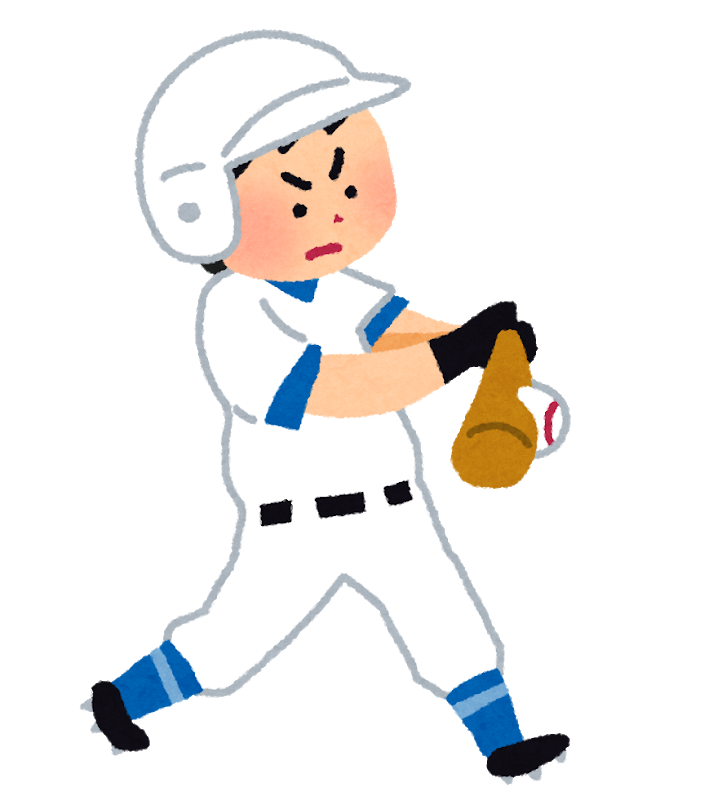

はじめに
|  |
岐阜高専硬式野球部は, 下級生チーム(1-3年生)の高校野球と上級生チーム(4-5年生)の高専野球に分かれて活動します. 下級生チームは全国高等学校野球大会を, 上級生チームは全国高等専門学校野球大会を目指して練習しています. |
|
【練習日程】
|
高校野球 第74回 秋季県大会 (2021年10月10日-23日)
|
※大会開催の延期が決定しました(2021.8.26付) ※10月10日-23日開催で調整中です 日時未定 vs 加茂 at 会場未定 ※この大会は完全無観客で行われます. ご理解とご協力どうぞよろしくお願いいたします. |
高専野球 令和3年度 全国大会 (2021年10月28日-30日)
|
※再延期の日程と会場が決まりました(2021.09.17付). 詳細はこちらをご覧ください.
at A会場 ことおか中央公園スカルパ野球場(秋田県山本郡三種町) |
Twitterタイムライン
リンク
更新情報